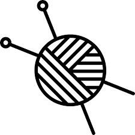

Développeur web et mobile
Présentation
40 ans, lilloise d'origine, mes parents entrepreneurs m'ont communiqué le sens de l'écoute et du conseil client. Passionnée par le monde du numérique, j'apporte de la valeur ajoutée pour aider votre entreprise à se digitaliser grâce à mes compétences en développeur web et community management. Curieuse et réactive, faites-moi confiance pour apporter professionnalisme et créativité à vos projets innovants.
Expériences professionnelles
03/2015 - 07/2017
09/2014 - 11/2014
07/2014 - 08/2014
09/2011 - 06/2012
Conseillère de vente en prêt-à-porter féminin>Magasin LPB Woman (Euralille)Accueil - Relation Client - Technique de vente -encaissement
Chargée de clientèle en assurance (La Madeleine)MAAF AssurancesAccueil - Relation client - Conseil à distance - Rédaction de contrats
Assistante commerciale dans le domaine informatiqueIngram Micro (Lesquin)Utilisation de CRM - création et correction de fiches de référencements produits - contrôle des commandes - travail en collaboration avec les commerciaux
Assistante pédagogique et commerciale dans une école de multimédiaEcole Supérieure privée e-artsup (Lille)Scolarité des étudiants - gestion des plannings - relation intervenants/étudiants - Développement de l'école/JPO - administratif
Formation / Certifications
03/2019 - 05/2019
09/2017 - 10/2017
07/2017 - 09/2017
2012 - 2013
2001
MS outils Médias Sociaux et Community ManagementGreta Lille Métropole
MOOC Créative Box : développer son potentiel innovateurplateforme MOOC ESSCA, école de management
MOOC Gestion du temps à l'ère digitale" "Design Thinking"Plateforme MOOC UNOW
Titre professionnel assistante commercialeStages Entreprise : Referencementmoi.com/ AIRE Télécom/La Voix Médias
Licence Histoire de l'art (Lille 3 Villeneuve D'ascq)stage entreprise : Mission d'inventaire et d'aide à la numérisation de la collection ("La Piscine"de Roubaix
Compétences techniques


Compétences
- Gestion de projet
- Animation d'équipe
- Réalisation de reporting
- Conception de wireframes
- Anglais niveau B1
Atouts
Loisirs et divers
